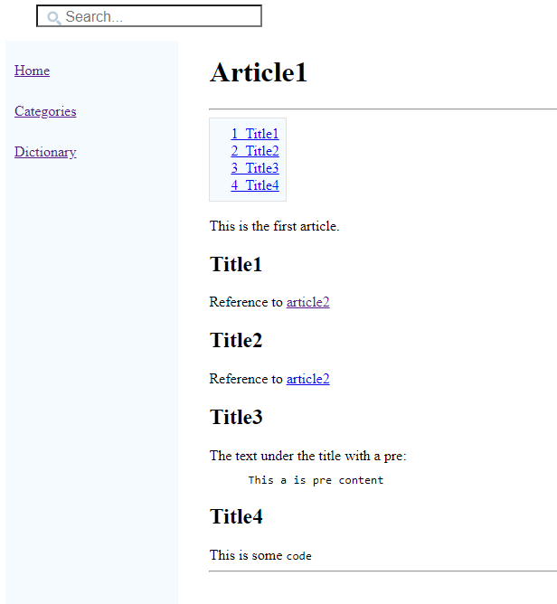
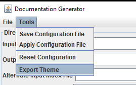
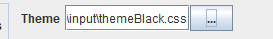
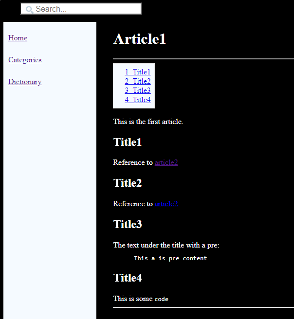
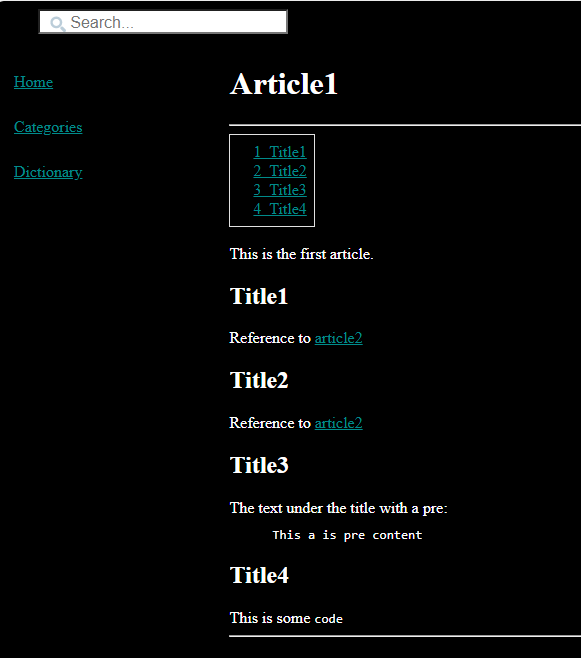
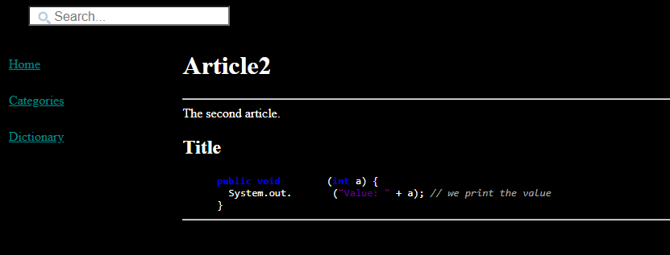
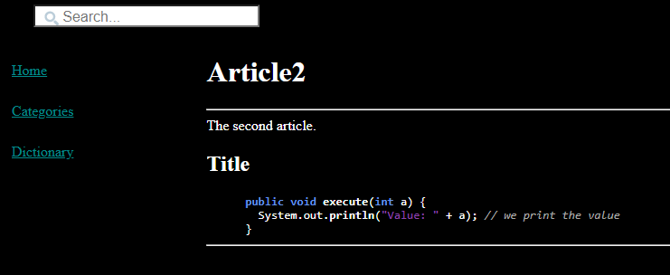

Home
Categories
Dictionary
Download
Project Details
Changes Log
What Links Here
How To
Syntax
FAQ
License
StyleSheet theme tutorial
1 Create the content of the wiki
1.1 Create an index article
1.2 Create an article
1.3 Create a second article
2 Generate the wiki
3 Create a dark theme
4 Update the properties for the links and the table of content
5 Update the properties for the syntax highlighting
6 See also
1.1 Create an index article
1.2 Create an article
1.3 Create a second article
2 Generate the wiki
3 Create a dark theme
4 Update the properties for the links and the table of content
5 Update the properties for the syntax highlighting
6 See also
This article is a tutorial which explains how to a custom StyleSheet theme for the wiki.
You will:
First we will copy the default theme to a new CSS file. We will use the Tools menu "Export Theme" and we choose a CSS file name to produce the theme:
The content of the default theme is:
We have the following result for the article1:
We see that the background is black and the text is white, but some UI elements are not adapted to the new dark theme:
Now we have the following result:
However the pre syntax highlighting in the second article is now difficult to read:
We will have to customize the colors of the syntax highlighting in our theme.
You will:
- Create an index article.
- Create an article
- Specify a custom theme
Create the content of the wiki
Create an index article
We will create an index file exactly as for the first tutorial. The index file will contain the following content:<index> The index. </index>
Create an article
We will create an article with the following content:<article desc="article1"> This is the first article. <title title="title1"/> Reference to <ref id="article2" /> <title title="title2"/> Reference to <ref id="article2#title" /> <title title="title3"/> The text under the title with a pre: <pre> This a is pre content </pre> <title title="title4"/> This is some <code>code</code> </article>Note that we put several titles and references in our index article, because it will be useful to see the aspect of the links and table of content with a custom theme.
Create a second article
We will create an article with the following content:<article desc="article2"> The second article. <title title="title"/> <pre syntax="java"> public void execute(int a) { _ System.out.println("Value: " + a); // we print the value } </pre> </article>
Generate the wiki
Let's generate our wiki. Double-click on the jar file of the application and:- Input directories: Set your directory
- Output directory: Set another empty directory for the HTML wiki result
- Click on "Apply"

Create a dark theme
We will customize the content of the StyleSheet theme to have a dark theme.First we will copy the default theme to a new CSS file. We will use the Tools menu "Export Theme" and we choose a CSS file name to produce the theme:

The content of the default theme is:
:root { --wiki-background: #f5faff; /* the background color for the table of content, the boxes, and the left menu */ --wiki-border: #E1E1E1; /* the border color for the table of content, and the boxes */ --wiki-pre-background: #f8f9fa; /* the background color for the pre */ --wiki-pre-border: #eaecf0; /* the border color for the pre */ --wiki-apilink-background: #f9f9f9; /* the background color for the api links */ --wiki-apilink-color: #36B; /* the text color for the api links */ --wiki-api-headertitle: #4A6782; /* the text color for the api headers */ --wiki-link: #0000EE; /* color of a normal link */ --wiki-link-visited: #551A8B; /* color of a visited link */ --wiki-link-active: #EE0000; /* color of an active link */ --wiki-lighterlink-background: rgba(255, 255, 255, .4); /* the background color for lighter links */ --wiki-lighterlink: blue; /* the text color for lighter links */ --wiki-linktooltip-background: #FEFFF0; /** the background color for the links tooltips */ --wiki-linktooltip-border: grey; /* the border color for the links tooltips */ --wiki-linktooltipbox-background: whitesmoke; /** the background color for the links tooltips box */ --wiki-tableheader-background: rgb(239, 239, 239); /* the background color for the table headers */ --wiki-tableheader-color: #4A6782; /* the text color for the table headers */ --wiki-tablecell-even-background: rgb(239, 239, 239); /* the background for the even rows */ --wiki-tablecell-odd-background: white; /* the background for the odd rows */ --wiki-table-border: black; /* the border color for the table cells */ --wiki-tablecaption-border: #c8ccd1; /* the border color for the table captions */ --wiki-tablecaption-background: #c8ccd1; /* the background color for the table captions */ --wiki-infobox-background: #f8f9fa; /* the background color for the infoboxes */ --wiki-infobox-border: #a2a9b1; /* the border color for the infoboxes */ --wiki-messagebox-default-color: #00529B; /* the color for default message boxes */ --wiki-messagebox-defaultbackground: transparent; /* the background color for default message boxes */ --wiki-messagebox-info-color: #00529B; /* the color for info message boxes */ --wiki-messagebox-info-background: #00FFFF; /* the background color for info message boxes */ --wiki-messagebox-success-color: #4F8A10; /* the color for success message boxes */ --wiki-messagebox-success-background: #00FF00; /* the background color for success message boxes */ --wiki-messagebox-warning-color: #9F6000; /* the color for warning message boxes */ --wiki-messagebox-warning-background: #FFA500; /* the background color for warning message boxes */ --wiki-messagebox-error-color: #D8000C; /* the color for error message boxes */ --wiki-messagebox-error-background: #FF5237; /* the background color for error message boxes */ --wiki-messagebox-progress-color: #00529B; /* the color for progress message boxes */ --wiki-messagebox-progress-background: #FFFF00; /* the background color for progress message boxes */ --wiki-img-border: #c8ccd1; /* the border color for the images */ --wiki-blockquote-border: #ccc; /* the border color for the blockquotes */ --wiki-tree-ulborder-color: #ddd; /* the color used for the trees segments */ --wiki-comment-background: whitesmoke; /* the background for comments */ --wiki-highlight: lightpink; /* the color used for the background highlight for full text search */ --wiki-todo-background: yellow; /* the background for the TODOs */ --wiki-todo-border: grey; /* the border color for the TODOs panels */ --wiki-lightbox-close: #808080; /* the color of the close button for the lightbox modal dialog */ --wiki-lightbox-caption: #ccc; /* the color of the close button for the lightbox modal dialog */ --wiki-lightbox-close-focus: #bbb; /* the color of the close button for the lightbox modal dialog when focusing on it */ --wiki-syntax-keyWord1: blue; /* the color of the keyword1 elements in the pre with syntax */ --wiki-syntax-keyWord2: #0d8200; /* the color of the keyword2 elements in the pre with syntax */ --wiki-syntax-comment: darkgray; /* the color of the comments in the pre with syntax */ --wiki-syntax-literal: #650099; /* the color of the literal elements in the pre with syntax */ --wiki-syntax-label: #990033; /* the color of the label elements in the pre with syntax */ --wiki-syntax-default: black; /* the color of the default elements in the pre with syntax */ }We will add two global properties to:
- Set the color of the text to be white
- Set the background of the pages to be black
:root { ... --wiki-lightbox-close-focus: #bbb; /* the color of the close button for the lightbox modal dialog when focusing on it */ color: white; background-color: black; }We will now set the theme in the "General" tab:

We have the following result for the article1:

We see that the background is black and the text is white, but some UI elements are not adapted to the new dark theme:
- The background of the table of content is white
- The links blue color is too dark and difficult to read
Update the properties for the links and the table of content
We will now:- Change the background of the table of content to black
- Use a lighter color for the links
:root { --wiki-background: black; /* the background color for the table of content, the boxes, and the left menu */ --wiki-link: darkcyan; /* color of a normal link */ --wiki-link-visited: darkcyan; /* color of a visited link */ ... color: white; background-color: black; }We have the following StyleSheet theme for the example.
Now we have the following result:

However the pre syntax highlighting in the second article is now difficult to read:

We will have to customize the colors of the syntax highlighting in our theme.
Update the properties for the syntax highlighting
We will now:- Change the color of the KEYWORD1 elements
- Change the color of the LITERAL elements
:root { ... --wiki-syntax-keyWord1: #6495ED; /* the color of the keyword1 elements in the pre with syntax */ --wiki-syntax-keyWord2: #0d8200; /* the color of the keyword2 elements in the pre with syntax */ --wiki-syntax-comment: darkgray; /* the color of the comments in the pre with syntax */ --wiki-syntax-literal: #8E44AD; /* the color of the literal elements in the pre with syntax */ --wiki-syntax-label: #990033; /* the color of the label elements in the pre with syntax */ --wiki-syntax-default: white; /* the color of the default elements in the pre with syntax */ ... color: white; background-color: black; }Now we have the following result for the second article:

See also
- StyleSheet theme: The "styleSheetTheme" property in the configuration file or the command-line allows to specify the StyleSheet theme for the HTML result
- Tutorials: This article presents a list of tutorials
×

Categories: Tutorials